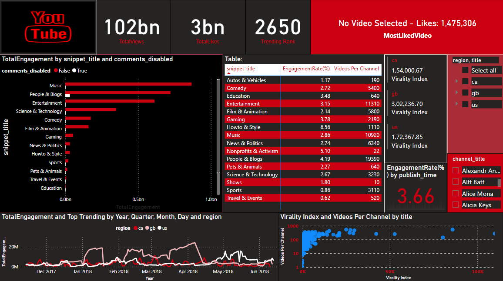

Built an end-to-end, scalable, and serverless data pipeline on AWS to ingest, transform, and visualize global YouTube trending video data for real-time business insights.

With the rising demand for cloud-based video analytics, this project focused on creating a fully automated pipeline to convert raw, semi-structured YouTube data (in JSON format) into structured insights. The goal: empower content creators, marketers, and data analysts to uncover patterns in user engagement, video virality, and regional performance trends.
The pipeline was designed using a modular, serverless stack of AWS services:
By automating the ingestion and enrichment of large-scale video data and delivering insights via cloud-native dashboards, the project streamlined access to viewer behavior and performance metrics. This helped stakeholders make informed decisions around content strategies, regional promotions, and viewer engagement optimization.
- Integrate ML models for virality prediction and anomaly
detection
- Add sentiment analysis on video comments
- Expand support for real-time streaming ingestion and alerts
This project showcases how modern data engineering tools can unlock actionable intelligence from messy web data and turn it into strategic advantage in the digital media landscape.